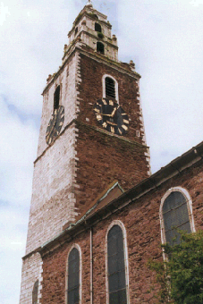

The present building with its distinctive tower dates from 1722 but there is evidence of former churches in the vicinity dating from as early as the 6th century, making Shandon one of the oldest sites of Christian worship in Cork. Shandon steeple is one of the landmarks of Cork citywith each of it's four sides bearing a clock face. The clock is affectionately known as the "four faced liar" on account of its traditional inability to show identical times on all four sides. More famous is it's peal of bells made known throughout the world through the poem The Shandon Bells written by 'Father Prout ' ( real name Fr. Mahony). The Church has a simple Renaissance interior which provides a peaceful atmosphere for worship. St. Anne's is open daily and attracts many visitors who have access to ring the bells and can view the city from an open parapet near the top of the tower. Perhaps one of the best known and best loved in Cork the church was built in 1722 as a chapel of ease to St. Mary's, Shandon, which was located nearby in Mallow Lane, now called Shandon Street. It is believed there was a church on this site at least as early as 1199. The church occupies the site of the old Church of St Mary that was destroyed in the siege of Cork in 1690. A temporary church was built at the foot of Shandon Street for some years until the present church was built. Erected by public subscription it is built primarily of local sandstone with limestone dressing. The tower was added until 1750 and the church gained full parochial status in 1772
|  | TOWERThe church in architectural terms is best known for its three-storey tower, over 170 feet high with walls 13 feet thick, with a copper dome that a vane in the form of a salmon. Nine feet high the 'fish of Shandon' has long remained one of the most familiar features on the Cork landscape. The weather vane on top is in the form of a golden fish, a salmon 13 feet high. The fish symbolizes the salmon industry in the River Lee. Beneath the fish is the pepper pot shaped lantern surmounted by a lead dome and four points of the compass. The square tower itself is 120 feet high. The tower is unique in that two of its faces are of white limestone and two are of red sandstone. The limestone faces South and West to the limestone country while the sandstone faces North and East to the sandstone country. Tradition has it that the limestone came from the ruins of Shandon Castle and the limestone from the Franciscan Abbey on the north Mall. A local rhyme describes it as: 'Party-coloured, like its people, Red and white stands Shandon Steeple' The McOsterich family were involved with the design and erection of this tower and to this day a special privilege is afforded them. Whenever a member of the family marries, anywhere in the world, the bells ring out in their honour. |
| BACK - St Fin Barre's Cathedral: | NEXT - Clock & Bells of Shandon: | |